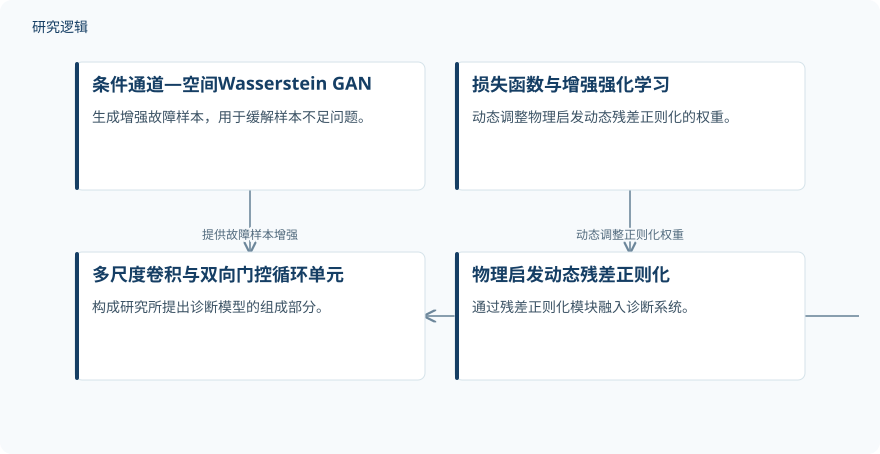

摘要解读
数据稀缺条件下轴承故障诊断的多尺度物理信息强化学习方法
Multi-scale physics-informed reinforcement learning method for bearing fault diagnosis under data scarcity
解读更新 2026-10-17 14:32 · 依据公开摘要整理，未核验全文细节
轴承故障诊断面临的难点，不只是识别故障，还包括标注数据稀缺时能否保持可靠表现。这项研究将物理启发正则化、生成式数据增强与强化学习结合，探索兼顾诊断准确性与稳定性的方法。
文章目录
标注不足，影响的不只是诊断准确率
机械故障识别关系到工业系统的稳定运行，但实际应用中的故障标注数据不足，会削弱诊断方法的准确性与泛化能力。本文针对这一问题提出MPINN-ERL，即结合增强强化学习的多尺度物理信息神经网络，研究对象是数据稀缺条件下的轴承故障诊断。
把残差约束、样本增强与权重调节结合起来
诊断模型采用多尺度卷积与双向门控循环单元，并加入物理启发残差正则化模块，将动态残差正则化融入系统。这里应保留“物理启发”的限定：摘要没有给出残差的具体公式，也未说明它对应哪些轴承动力学关系，不能据此将其理解为完整物理方程的直接求解。
针对样本不足，研究设计了条件通道—空间Wasserstein生成对抗网络，用于生成增强故障样本。此外，作者引入损失函数与增强强化学习算法，动态调整物理启发动态残差正则化的权重。方法设计因此同时涉及数据增强与约束权重调节，而不只是增加网络结构。
依据摘要整理的MPINN-ERL组成关系


概括样本增强、诊断模型与正则化权重调节的关系，不表示论文的具体训练顺序或实验配置。
下载 SVG图示关系说明
实线表示相邻阶段的信息流，虚线表示跨阶段联系或反馈。
条件通道—空间Wasserstein GAN → 多尺度卷积与双向门控循环单元：提供故障样本增强；物理启发动态残差正则化 → 多尺度卷积与双向门控循环单元：融入诊断系统；损失函数与增强强化学习 → 物理启发动态残差正则化：动态调整正则化权重
摘要报告了有竞争力的准确性与相对稳定性
摘要报告，在所评估的轴承故障数据集上，MPINN-ERL取得了有竞争力的诊断准确性；与若干具有代表性的先进深度学习方法相比，其诊断表现也相对稳定。这一结论限于已评估的数据集与比较范围，摘要没有提供具体准确率、提升幅度或稳定性指标，因此不宜进一步写成全面领先或已验证的工业部署效果。
样本规模、比较条件与验证边界仍待查阅
仅凭摘要，尚无法判断数据集名称、真实标注样本数量、故障类别、训练测试划分，以及生成增强样本的数量和质量。增强样本不能直接视为新增的独立实测样本。比较方法的具体名单、调参条件、稳定性的衡量方式，以及是否包含跨工况或现场验证，也需要进一步查阅正文；这些属于摘要未报告的信息，并不意味着论文没有开展相关工作。
阅读启发：关注物理约束如何参与诊断
阅读启发：对智能运维读者，这项工作的关注点不仅是故障样本如何扩充，还在于物理启发约束如何进入模型，以及其权重为何需要动态调整。进一步阅读时，可重点核对残差的物理含义、强化学习的调节机制，以及各组成部分对最终表现的贡献证据，再判断这一组合是否适用于自身的数据稀缺场景。
以上为本站阅读启发与建议，不是论文已验证的结论。